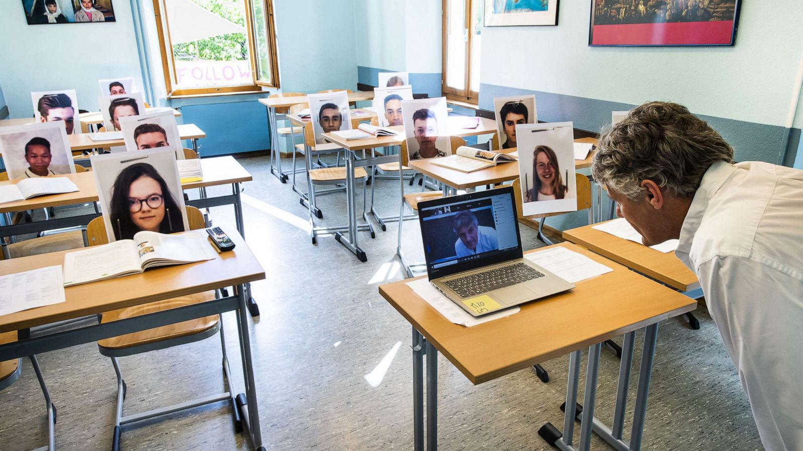

Schools
Published on November 5, 2023 by Michael Sabo
The COVID-19 pandemic brought about several changes in the education system, impacting students, teachers, and parents alike. With schools forced to close their doors, education transitioned to the digital realm, and online classes became the new normal. For students, adapting to virtual learning posed challenges, from navigating on to online platforms to staying engaged without the standard classroom environment.
One significant effect was the shift in grading systems and GPAs. The abrupt move to remote learning prompted educators to reevaluate assessment methods. Some schools adopted pass/fail options due to the unique challenges students faced. The pandemic-induced disruptions affected students differently, and the traditional grading system didn't always capture the full picture of their academic capabilities.
Online classes, while a necessary response to the crisis, revealed disparities in accessing technology and internet connectivity. Students from less privileged backgrounds often struggled to participate fully. Parents also found themselves taking on new roles as home-based learning supervisors, adding an extra layer of complexity to the educational landscape.
COVID-19 prompted a dramatic shift in how education is brought to our children, with lasting implications for students and educators. As we navigate the post-pandemic educational landscape, there's a growing awareness of the need for inclusive and adaptable approaches to ensure that every student has equal access to quality education.
| Year | Lowest GPA | Highest GPA | Average GPA |
|---|---|---|---|
| 2019 | 2.6 | 4.0 | 3.6 |
| 2020 | 2.2 | 4.0 | 3.7 |
| 2021 | 1.9 | 4.0 | 3.2 |
| 2022 | 2.4 | 4.0 | 3.5 |